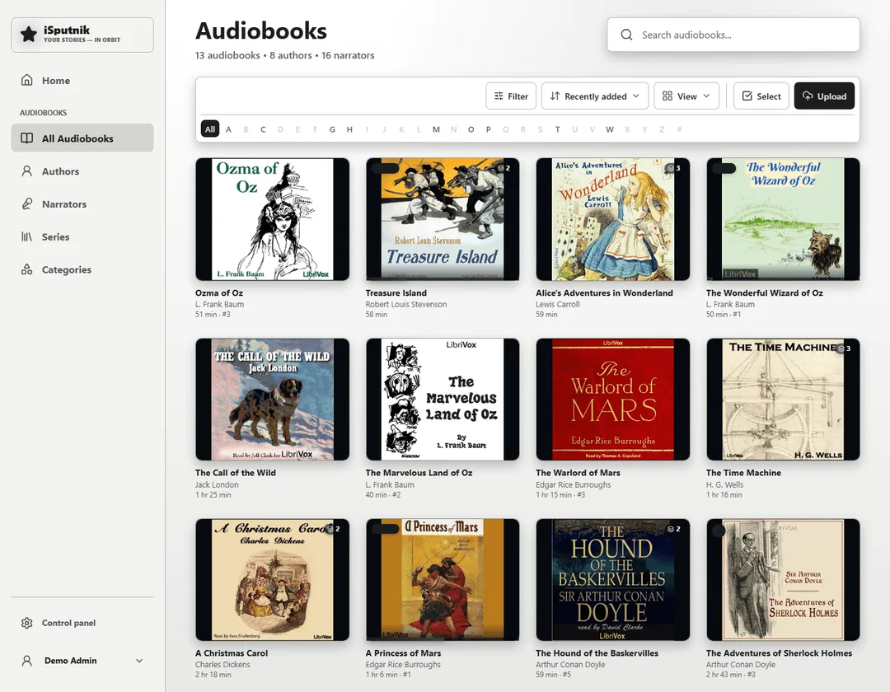
Audiobooks
Organize by author, series, genre, or custom libraries.
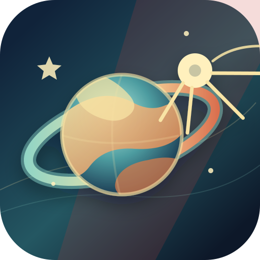
isputnik GitHubBeta · Free · Open source
isputnik.home keeps books, photos, videos, stories and family history connected in one place, on your own server.
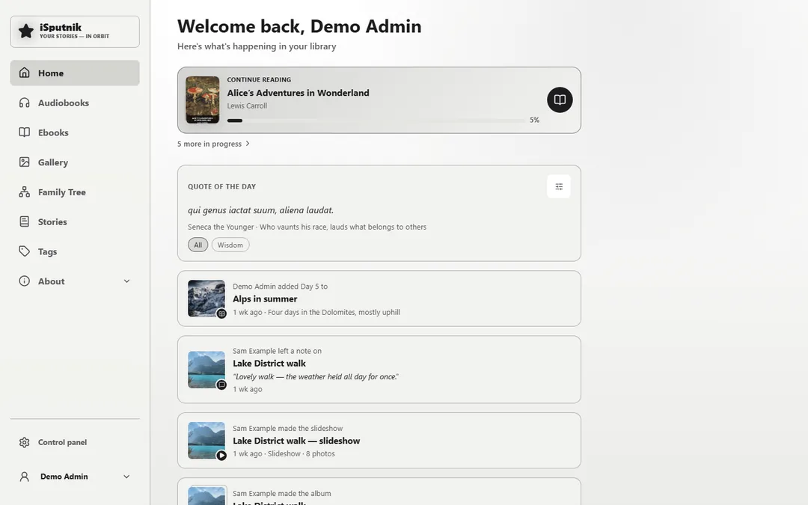
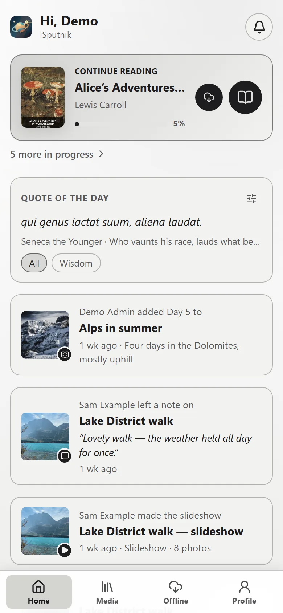
Your server
Self-host your books, photos, videos, and family history under your own control.
One home
A photo becomes part of a person's history, and people, places and books part of a story, without copying a thing.
Pick up where you left off
Reading and listening progress follows each person, on a desktop, tablet or phone.
Private by design
Private libraries, granular permissions, and optional multi-factor authentication.
Listen anywhere. Pick up where you left off. All in one place.

Organize by author, series, genre, or custom libraries.
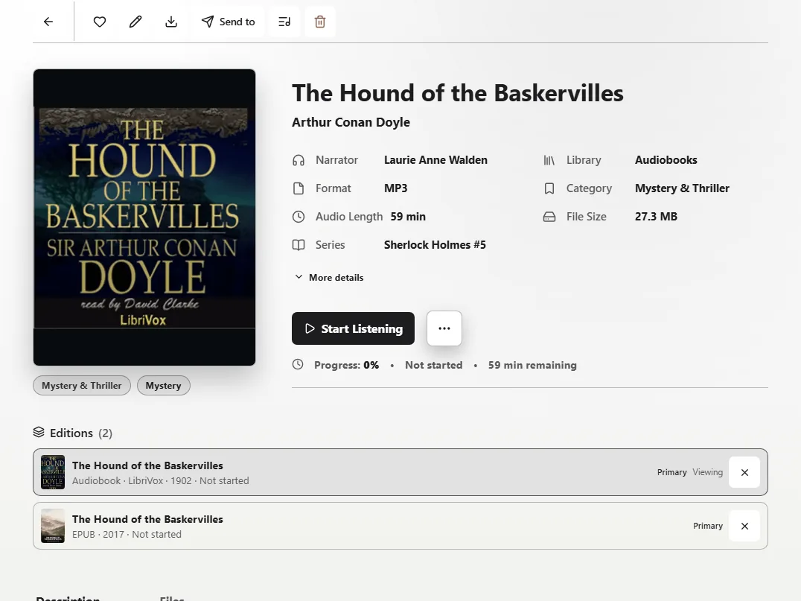
Each audiobook has its own page with details.
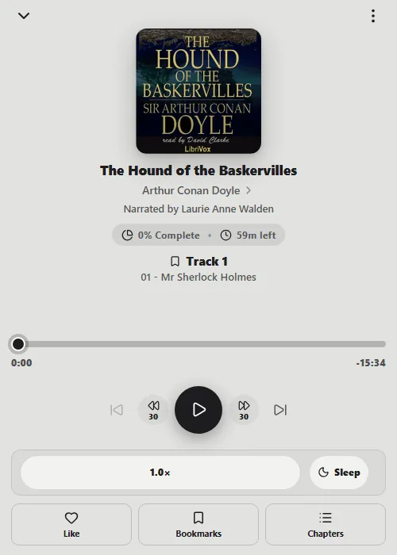
Listen with built-in playback controls.
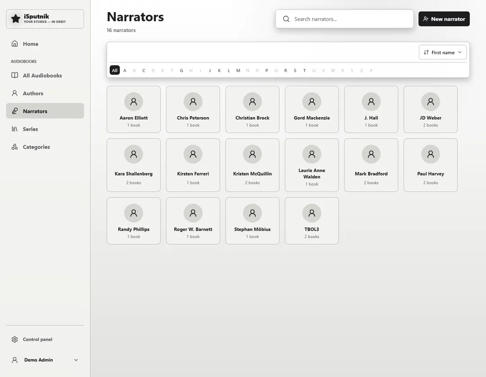
Every reader is a person you can browse to.
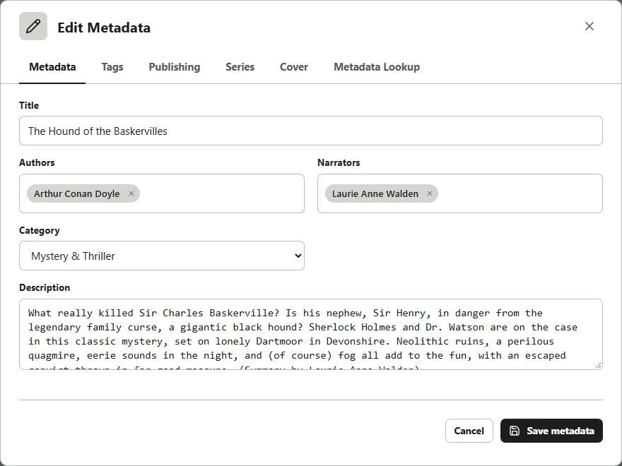
Edit titles, people, series, covers, and tags by hand.
For the whole family
Send a photo to your parents and ask who is in it. Let a cousin drop off old photos without an account. What they tell you stays with the photos, not in a message thread.
Anyone can drop off photos through a link, no account needed. You decide what to keep.
Send photos to someone and get back names, dates, places, notes and voice recordings.
One page for what was sent to you, and what is waiting on your answer.
Everyone gets their own account and access. Guests get a link that expires.
Highlights
The parts you only notice once the library is real: getting it all back, letting only the right people in, and maps that don't depend on someone else's server.
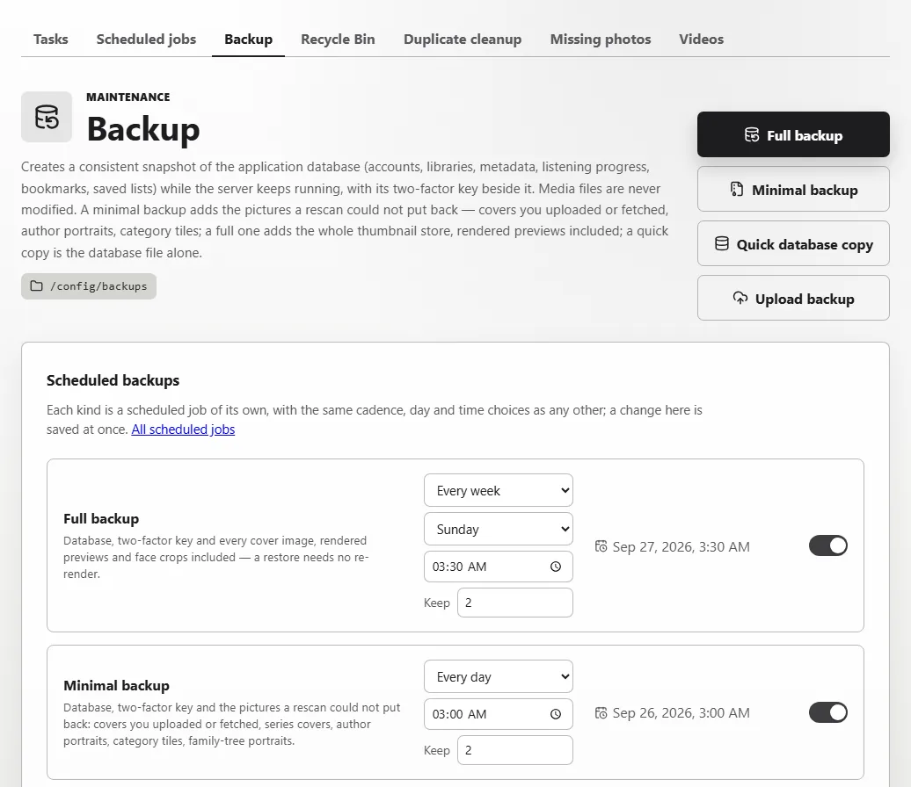
Backups run while the server keeps serving, and each one downloads as a single file you can restore on a fresh install.
A full backup carries the database and every cover and preview, so a restore needs no re-render. A minimal one carries only what a rescan could not put back. A quick copy is the database file alone.
Full weekly and minimal nightly, say, each keeping its own number of copies. The database is also copied before every upgrade.
One SQLite database beside your own folders, and the media in them is never modified. Anything deleted waits in a Recycle Bin.
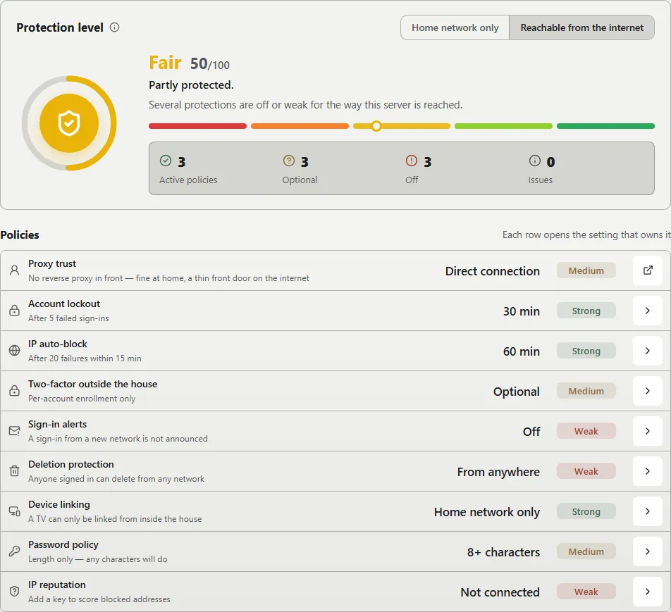
One page scores the whole install out of 100 and grades every policy behind the number. Each row opens the setting that owns it.
An authenticator app or an emailed code, and passkeys for the people who have them. It can be required only from outside the house.
Repeated failures lock the account and, if they keep coming, block the address. Rate limits and a strict Content Security Policy sit underneath.
An email to the admin when a sign-in comes from somewhere new, and a full activity log to check afterwards.
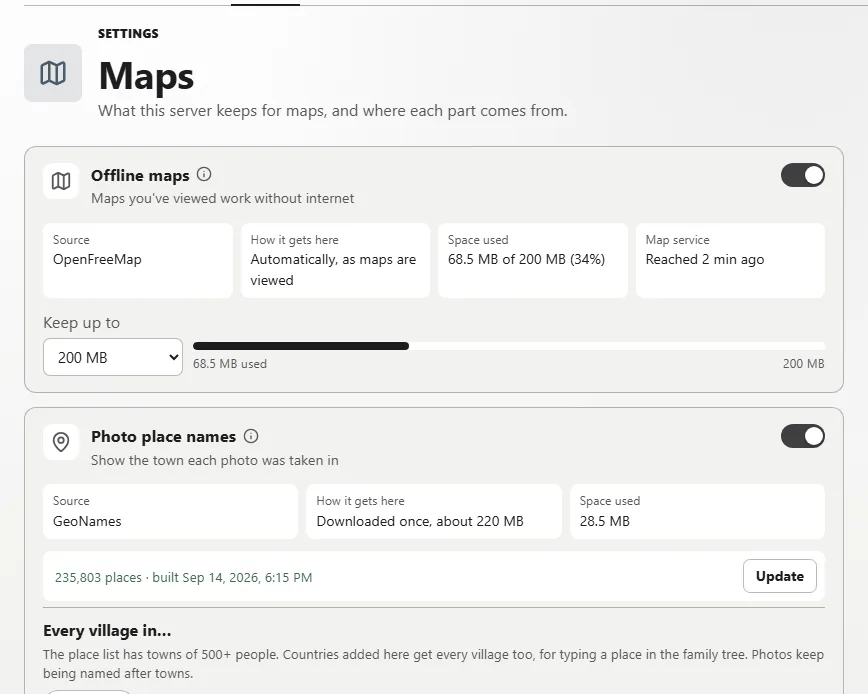
Photo maps, the family map and story routes share one set of map features. Each is a card with a switch that says what it downloads, and how much room it takes, before it does.
The server keeps the maps you've viewed, up to a limit you choose. They draw with the connection down, and the map service no longer sees where you look.
Each photo named after the town it was taken in, from a GeoNames database built on your server. No photo's location is sent anywhere.
Addresses placed on the Dashboard map from a database on the server, never looked up online.
Appearance
Six themes, and each person picks their own.
Selection: Minimalist The default. Platinum grey and black ink, like a certain beige computer.